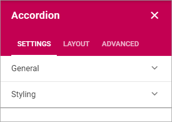
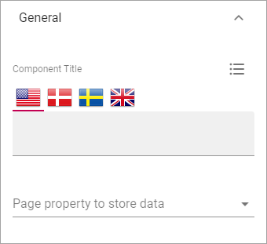

Accordion¶
With this block you can add the posibility to enter expandle text on a page. The content is added using the Write mode.
For the end user and Accordion entry can look like this:

And when expanded:

The settings¶
The settings you can do are the following:
General¶
Under General you can set the following:
- Component Title: If a title should be shown for the block, add it in this field. If no variation exists for the page, it looks like in the image above and you can set the title in the languages active in the tenant. If variations exists, only one title can be set. In that case, titles in other languages are set in the variations.
- Page Property to store data: Select property for the possibibilty to reuse content anywhere else on the page.

Layout and Advanced¶
The tabs Layout and Advanced contain general settings, see: General Block Settings
Adding Accordion Text¶
When the Accordion block has been added to a page, and the page has been published, it can be used this way by an editor:
- Enter Write mode.
- Click the plus in the Accordion block.
The following is shown:

- Add an Accordion Title at the top. This is the expandable text.
- Add the text that should be shown when the title is expanded. Note the formatting options.
Here’s an example:

- Click “SAVE”.
- Add additional Accordions to the block the same way.
To edit an Accordion, click the pen. To delete an Accordion, click the dust bin.